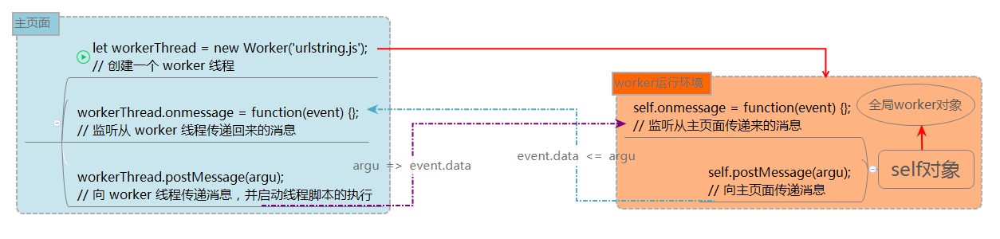

通常一个浏览器会至少存在三个线程：JavaScript 引擎线程，GUI渲染线程以及用于控制交互的浏览器时间触发线程。其中，JavaScript 引擎线程是处理 JavaScript 代码的单线程。
多少年以来，我们都没有办法在浏览器的 UI 线程之外运行 JavaScript 代码。JavaScript 和 UI 共享同一进程的部分原因是它们之间互相访问频繁，但这些任务一旦失控会导致糟糕的用户体验。
Web Workers API 改变了这种状况，它引入了一个接口，能使代码运行且不占用浏览器 UI 线程的时间。它允许加速一个运行特定密集代码的新进程，使得原来的线程不会锁定浏览器，其实就是在后台运行。
本质上来说，由 Web Worker 创建的线程实际是在操作系统中开启了一个全新的线程，意味着该线程与原来的线程是完全不同的。
Web Worker 运行环境
Web Worker 没有绑定 UI 线程，这意味着它们不能访问浏览器的许多资源。它不能访问 DOM 中的页面元素，也不能访问页面上所有的全局变量。
但是每个 Web Worker 都有自己的全局运行环境，其功能只是 JavaScript 特性的一个子集。Web Worker 运行环境由如下部分组成：
- 一个
navigator对象：只包括四个属性：appName、appVersion、user Agent和platform - 一个
location对象（与window.location对象相同，不过所有属性都是只读的） - 所有的 ECMAScript 对象，诸如：
Object、Array、Date等 XMLHttpRequest构造器setTimeout()和setInterval()方法- 一个
self对象，指向全局worker对象 - 一个
importScripts()方法，用来加载 Worker 所用到的外部 JavaScript 文件 self.close()方法，worker线程自身调用，停止 worker 代码运行并终止它的线程terminate()方法，在主页面中作为 Web Worker 对象的方法调用，使 worker 线程立即被终止，无论它当时处于何种状态，该方法不会给 workder 留下任何完成其他操作的机会
创建一个 Web Worker 线程
由于 Web Worker 有着不同的全局环境，因此我们无法从 JavaScript 代码中创建它。为了在现有页面中使用 Web Worker，我们首先需要创建一个完全独立的 JavaScript 文件，并在其中放置需要在 Worker 中运行的代码。然后，我们将这个 JavaScript 文件的 URL 作为参数传给 Worker 构造器即可：
|
|
上述代码一经执行，就会为这个 JavaScript 文件创建一个新的线程和一个新的 Worker 运行环境。该文件会被异步下载，直到文件下载完毕才会启动此 Worker 线程并执行其脚本。
与 Web worker 通信
wordker 与页面通过事件接口进行通信。
事件监听器
此外，Web Worker 规范为 worker 对象定义了两种 EventListener 类型的属性：
onmessage：在 worker 线程传输消息时触发，事件对象的data属性中存储着消息内容onerror：在 worker 线程出错时触发
我们可以通过以下两种方式为 worker 对象绑定时间处理器：
worker.onmessage = function(event) {};worker.addEventListener('message', function(event) {}, false);
postMessage()方法
postMessage() 方法用于向 worker 的内部作用域内传递消息。该方法接收一个单独的参数，即要传递给 worker 的数据。数据可以是任何值或者是经过结构化拷贝算法处理过的 JavaScript 对象，换句话说，可以包含循环引用。
|
|
aMessage：传输给 worker 的对象；它将包含于传递给onmessage处理函数的事件对象中的 data 字段内。你可以传递任意值或是经过结构化拷贝算法处理过的 JavaScript 对象，即可以包含循环引用。transferList：一个可选的对象数组，用于转让它们的所有权。如果一个对象的所有权被转让，那么它在原来的上下文内将不可使用，而只能在转让到的 worker 内可用。由规范可知， 只有 MessagePort 与 ArrayBuffers 对象能被转让。
通过转让所有权(可转让对象)来传递数据
使用 postMessage() 方法的第二个参数可以将特定类型的对象(可转让对象) 传递给一个 worker/从 worker 传回 。可转让对象从一个上下文转移到另一个上下文而不会经过任何拷贝操作。这意味着当传递大数据时会获得极大的性能提升。
与传统的按引用传递不同，一旦对象转让，那么它在原来上下文的那个版本将不复存在。该对象的所有权被转让到新的上下文内。例如，当你将一个 ArrayBuffer 对象从主应用转让到 Worker 中，原始的 ArrayBuffer 被清除并且无法使用。它包含的内容会(完整无差的)传递给 Worker 上下文。
|
|
注意： 在主页面与 worker 之间传递的数据是通过拷贝，而不是共享来完成的。传递给 worker 的对象需要经过序列化，接下来在另一端还需要反序列化。页面与 worker 不会共享同一个实例，最终的结果就是在每次通信结束时生成了数据的一个副本。大部分浏览器使用结构化拷贝来实现该特性。
加载外部脚本
worker 可以通过 importScripts() 方法加载外部 JavaScript 文件，该方法接受一个或多个 JavaScript 文件 URL 作为参数。importScripts() 的调用过程是阻塞式的，直到所有文件加载并执行完毕之后，脚本才会继续运行。
由 importScripts() 导入的每个脚本中的全局对象都能够被 worker 使用。如果脚本无法加载，将抛出 NETWORK_ERROR 异常，接下来的代码也无法执行。而之前执行的代码(包括使用 window.setTimeout() 延迟执行的代码)却依然能够使用。importScripts() 之后的函数声明依然能够使用，因为它们始终会在其他代码之前运行。
注意： 脚本的下载顺序不固定，但执行时会按照你将文件名传入到 importScripts() 中的顺序。这是同步完成的；直到所有脚本都下载并运行完毕， importScripts() 才会返回。
示例
下面，我们来写一段简短的代码，演示主页面与 worker 线程 通信的过程。首先是主页面的脚本代码：
|
|
然后是 code.js 文件中的代码：
|
|
！！！注意： 无论是在主页面还是 worker 线程内部，我们始终都应该先为 worker 对象的 onmessage（或者 onerror）事件绑定函数处理器，然后再调用 postMessage() 方法传递数据。
图解
下面这张图片展示了主页面与 worker 线程通信间的关系：
